Waschbare Unterlagen, gefertigt in unseren eigenen Werkstätten.
Wir fertigen waschbare, wiederverwendbare Bettunterlagen, Haustierunterlagen, Sitzauflagen und Lätzchen für Erwachsene für Marken, Händler, Pflegeeinrichtungen und Amazon-Verkäufer. Diese Seite zeigt alles, was wir liefern können: Fabrik, Sortiment, Materialien, Farben, Größen und Zertifikate.
 52
52Unsere Produktionsstätte und Werkstätten
Jede Unterlage wird im eigenen Haus gefertigt, vom Kaschieren der wasserdichten Folie bis zum Verpacken des Kartons.
 101
101 50
50 5152
5152 53
53 54
54 55
55Von der Stoffrolle zum fertigen Karton
| Kaschieren | TPU-Folie auf den Rückseitenstoff kaschiert; Wasserdichtheit an jeder Rolle geprüft |
|---|---|
| Zuschnitt | Automatische Zuschnitttische; Maßtoleranz ±2 cm |
| Steppung | Mehrnadel-Steppmaschinen; 12 Standardmuster oder Ihr eigenes |
| Nähen | Doppelt genähtes Schrägband, Griffe, Laschen und Etiketten |
| Kontrolle | Inline-Prüfungen und Endkontrolle nach AQL 2.5 |
| Verpackung | Handelspackungen, FBA-Etiketten, Exportkartons, Gewichtsprüfung jedes Kartons |
Acht Unterlagen-Ausführungen, die wir liefern
Jede Ausführung ist in jeder Größe und Farbe möglich, mit Ihrem Etikett und Ihrer Verpackung.
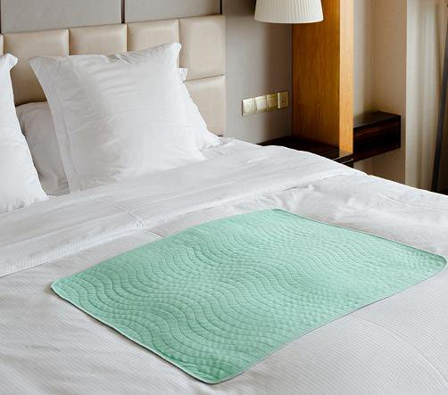
14 58
58 59
59 60
60 61
61Normale Ausführung
Unser Arbeitstier für jeden Tag. Ober- und Rückseite aus weichem gebürstetem Polyester umschließen einen vernadelten Saugkern und eine TPU-Sperrschicht. Einfach in Farbe und Größe anpassbar.
| Oberstoff | Weiches gebürstetes Polyester 90 g/m² (oder Baumwolle) |
|---|---|
| Saugkern | 95 % Polyester / 5 % Viskose oder 65 % / 35 %; 200 / 230 / 270 / 340 g/m²; ≈ 200 / 300 / 400 ml pro Unterlage 34 × 36 in (Leicht / Standard / Stark) |
| Wasserdichte Sperrschicht | TPU-Folie 0,025 mm, 30 g/m²; über 300 Maschinenwäschen |
| Unterseite | Weiches gebürstetes Polyester 90 g/m², rutschfest |
Größen: 18 × 24 in bis 72 × 72 in, 40 × 60 cm bis 90 × 160 cm oder jede Größe · Farben: 8 Standardfarben, Drucke oder Pantone
Normale Ausführung: ganze Seite 15
15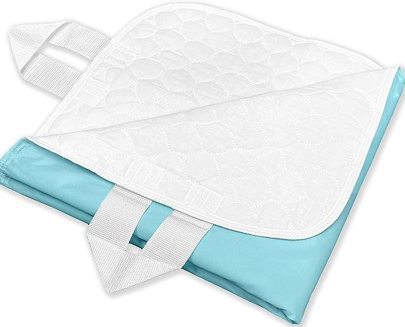
65 66
66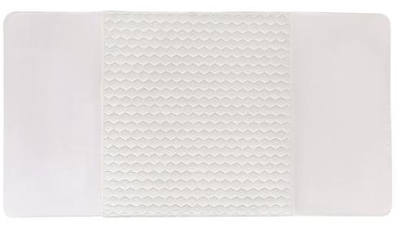
67Baumwolloberfläche · PVC-Rückseite
Für alle, die Baumwolle bevorzugen. Ein Baumwoll-Oberstoff in vier Gewichten liegt auf einer weichen Polsterlage und einem Saugkern, mit wasserdichter PVC-Rückseite, geschützt durch rutschfesten Strickstoff.
| Oberstoff | Hautfreundliche Baumwolle, 100 / 120 / 140 / 180 g/m² |
|---|---|
| Polsterung | Polsterlage aus Polyester |
| Saugkern | 95 % Polyester / 5 % Viskose oder 65 % / 35 %; 200 / 230 / 270 / 340 g/m²; ≈ 200 / 300 / 400 ml pro Unterlage 34 × 36 in (Leicht / Standard / Stark) |
| Wasserdichte Rückseite | PVC mit rutschfestem Strickstoff; über 300 Maschinenwäschen |
Größen: 18 × 24 in bis 72 × 72 in, 40 × 60 cm bis 90 × 160 cm oder jede Größe · Farben: 8 Standardfarben, Drucke oder Pantone
Baumwolloberfläche · PVC-Rückseite: ganze Seite 16
16 68
68Bambusstoff
Ein fünflagiger Aufbau. Der Bambus-Oberstoff fühlt sich kühl und glatt an, eine Wattelage sorgt für Weichheit, und Saugkern, TPU-Sperrschicht und rutschfeste Rückseite übernehmen den Schutz.
| Oberstoff | Bambusstoff, kühl und glatt |
|---|---|
| Watte | Wattelage aus Polyester |
| Saugkern | 95 % Polyester / 5 % Viskose oder 65 % / 35 %; 200 / 230 / 270 / 340 g/m²; ≈ 200 / 300 / 400 ml pro Unterlage 34 × 36 in (Leicht / Standard / Stark) |
| Wasserdichte Sperrschicht | TPU-Folie 0,025 mm, 30 g/m²; über 300 Maschinenwäschen |
| Unterseite | Weiches gebürstetes Polyester, rutschfest |
Größen: 18 × 24 in bis 72 × 72 in, 40 × 60 cm bis 90 × 160 cm oder jede Größe · Farben: 8 Standardfarben, Drucke oder Pantone
Bambusstoff: ganze Seite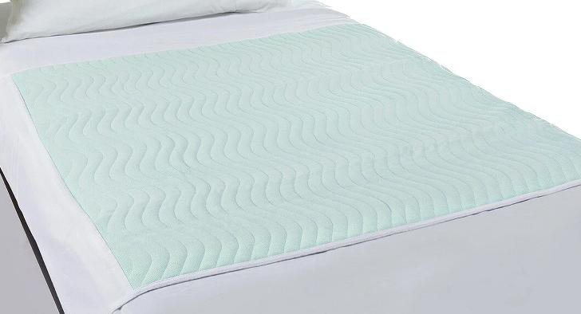
17 70
70 71
71Frottee
Frotteeschlingen leiten Flüssigkeit von der Haut in den Kern. Unter dem Frottee-Oberstoff: eine Wattelage, der Saugkern, die TPU-Sperrschicht und eine fleckabweisende, rutschfeste Rückseite.
| Oberstoff | Frottee (Schlingenflor) |
|---|---|
| Watte | Wattelage aus Polyester |
| Saugkern | 95 % Polyester / 5 % Viskose oder 65 % / 35 %; 200 / 230 / 270 / 340 g/m²; ≈ 200 / 300 / 400 ml pro Unterlage 34 × 36 in (Leicht / Standard / Stark) |
| Wasserdichte Sperrschicht | TPU-Folie 0,025 mm, 30 g/m²; über 300 Maschinenwäschen |
| Unterseite | Weiches gebürstetes Polyester, rutschfest |
Größen: 18 × 24 in bis 72 × 72 in, 40 × 60 cm bis 90 × 160 cm oder jede Größe · Farben: 8 Standardfarben, Drucke oder Pantone
Frottee: ganze Seite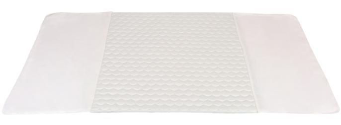
18 72
72 73
73 74
74 75
75Mit Einstecklaschen
Für unruhige Schläfer und bettlägerige Pflege. Das gesteppte Mittelteil saugt; die langen Seitenlaschen werden unter die Matratze gesteckt, damit die Unterlage nicht verrutscht oder sich zusammenschiebt.
| Oberstoff | Weiches gebürstetes Polyester 90 g/m² (oder Baumwolle) |
|---|---|
| Saugkern | 95 % Polyester / 5 % Viskose oder 65 % / 35 %; 200 / 230 / 270 / 340 g/m²; ≈ 200 / 300 / 400 ml pro Unterlage 34 × 36 in (Leicht / Standard / Stark) |
| Wasserdichte Sperrschicht | TPU-Folie 0,025 mm, 30 g/m²; über 300 Maschinenwäschen |
| Unterseite | Weiches gebürstetes Polyester 90 g/m², rutschfest |
Größen: 18 × 24 in bis 72 × 72 in, 40 × 60 cm bis 90 × 160 cm oder jede Größe · Farben: 8 Standardfarben, Drucke oder Pantone
Mit Einstecklaschen: ganze Seite 19
19 77
77 78
78 79
79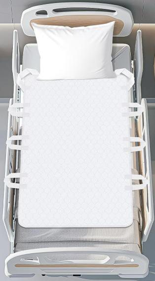
80Mit Griffen
Eine Pflegeunterlage, die zugleich als Lagerungshilfe dient. Mit verstärkten Griffen können zwei Pflegekräfte eine Person anheben, umlagern und drehen; danach liegt die Unterlage flach als normaler Bettschutz.
| Oberstoff | Weiches gebürstetes Polyester 90 g/m² (oder Baumwolle) |
|---|---|
| Saugkern | 95 % Polyester / 5 % Viskose oder 65 % / 35 %; 200 / 230 / 270 / 340 g/m²; ≈ 200 / 300 / 400 ml pro Unterlage 34 × 36 in (Leicht / Standard / Stark) |
| Wasserdichte Sperrschicht | TPU-Folie 0,025 mm, 30 g/m²; über 300 Maschinenwäschen |
| Unterseite | Weiches gebürstetes Polyester 90 g/m², rutschfest |
Größen: 18 × 24 in bis 72 × 72 in, 40 × 60 cm bis 90 × 160 cm oder jede Größe · Farben: 8 Standardfarben, Drucke oder Pantone
Mit Griffen: ganze Seite 20
20 81
81 82
82 83
83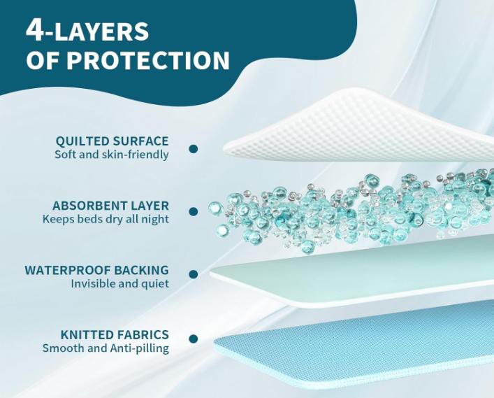
84PVC-Rückseite
Die preisgünstige Option für Großabnehmer. Oberstoff aus gebürstetem Polyester oder Baumwolle und Saugkern liegen auf einer vollständig wasserdichten PVC-Sperrschicht, abgeschlossen mit einer rutschfesten, pillingarmen Strick-Rückseite.
| Oberstoff | Weiches gebürstetes Polyester oder Baumwolle |
|---|---|
| Saugkern | 95 % Polyester / 5 % Viskose oder 65 % / 35 %; 200 / 230 / 270 / 340 g/m²; ≈ 200 / 300 / 400 ml pro Unterlage 34 × 36 in (Leicht / Standard / Stark) |
| Wasserdichte Sperrschicht | PVC; über 300 Maschinenwäschen |
| Unterseite | Strickstoff, rutschfest und pillingarm |
Größen: 18 × 24 in bis 72 × 72 in, 40 × 60 cm bis 90 × 160 cm oder jede Größe · Farben: 8 Standardfarben, Drucke oder Pantone
PVC-Rückseite: ganze Seite 21
21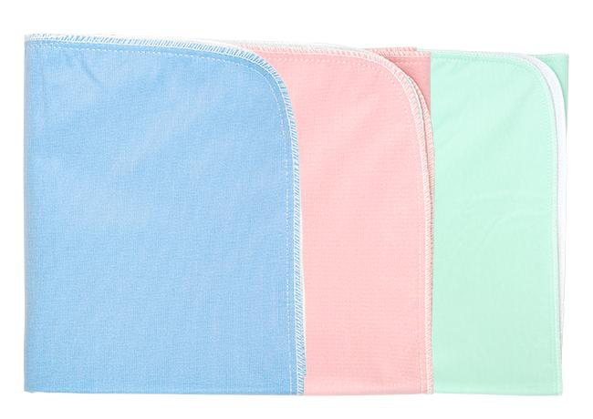
85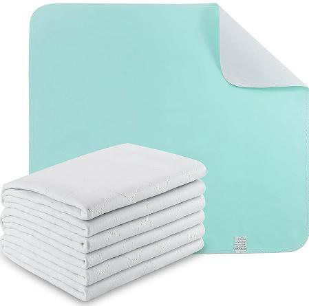
8661Swift Dry
Für Wäscheprogramme mit hohem Durchlauf. Ein Schlingenware-Oberstoff über einem starken 340-g/m²-Kern (≈ 400 ml pro Unterlage 34 × 36 in). Durchschlag- und Trocknungszeit werden für Ihren Auftrag gemessen und im Prüfbericht angegeben.
| Oberstoff | Schlingenware 150 g/m² |
|---|---|
| Saugkern | 65 % Polyester / 35 % Viskose, 340 g/m²; ≈ 400 ml pro Unterlage 34 × 36 in |
| Wasserdichte Sperrschicht | TPU-Folie 0,025 mm, 30 g/m²; über 300 Maschinenwäschen |
| Unterseite | Weiches gebürstetes Polyester 90 g/m², rutschfest |
Größen: 18 × 24 in bis 72 × 72 in, 40 × 60 cm bis 90 × 160 cm oder jede Größe · Farben: 8 Standardfarben, Drucke oder Pantone
Swift Dry: ganze SeiteVier Lagen, jede mit einer Aufgabe
Alle Ausführungen basieren auf demselben Lagensystem. Wählen Sie das Material jeder Lage.
 76
76 57
57 64
64 69
69Lage für Lage
| 1 · Gesteppter Oberstoff | Gebürstetes Polyester 90 g/m² · Baumwolle 100–180 g/m² · Bambus · Frottee · Schlingenware 150 g/m² |
|---|---|
| 2 · Saugkern | Vernadeltes Polyester / Viskose (95/5 oder 65/35) · 200 / 230 / 270 / 340 g/m² |
| Aufnahmemenge | ≈ 200 / 300 / 400 ml pro Unterlage 34 × 36 in (Leicht / Standard / Stark); Prüfmethode auf der Seite Saugleistung |
| 3 · Wasserdichte Sperrschicht | TPU-Folie 0,025 mm, 30 g/m², atmungsaktiv und leise · oder PVC |
| 4 · Rückseite | Gebürstetes Polyester 90 g/m², rutschfest · oder Strickstoff, pillingarm |
| Optional | Zusätzliche Wattelage (5-lagiger Aufbau), zweiter Kern für starke Nutzung |
| Kante | Schrägband-Einfassung, doppelt genäht, abgerundete Ecken |
| Haltbarkeit | Über 300 Maschinenwäschen; Ausführung für Einrichtungen bis 95 °C |
Farben, Drucke, Steppung, Griffe und Laschen
Farbe von Ober- und Rückseite frei wählbar.
 26
26 27
27 28
28 29
29 30
30 31
31 32
32 33
338 Standardfarben
Weiß, helles Mint, Grün, Hellblau, Pfirsich, Braun, Marine und Grau, als Lagerstoff. Zweifarbige Ausführungen (zum Beispiel weiße Oberseite, blaue Rückseite) sind Standard.
| Lagerfarben | Ab 500 Stück pro Größe |
|---|---|
| Sonderfarbe | Jede Pantone-TCX-Farbe, ab 1.000 Stück pro Artikel |
| Zweifarbig | Ober- und Rückseite in unterschiedlichen Farben |
 88
88 89
89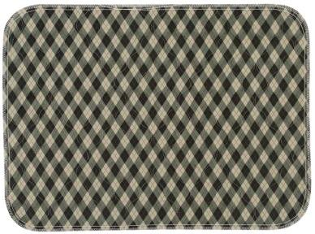
90 91
91 92
92 93
93 94
94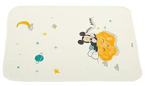
102Druckdesigns
Karos und dunkle Töne kaschieren Flecken bei Erwachsenen und Haustieren; verspielte Drucke passen zu Kindern und Kinderzimmern. Ihr eigenes Motiv kann auf den Oberstoff gedruckt werden.
 87
8712 Steppmuster
Welle, Raute, Kanal, Zwiebel, Schuppe und mehr, oder eine individuelle Logo-Steppung. Die Steppung hält den Kern über Hunderte Wäschen in Position und verteilt Flüssigkeit auf eine größere Fläche.
7978 9677
9677Griffe zum Anheben und Drehen
Verstärkte Griffe machen die Unterlage zur Lagerungshilfe: Zwei Pflegekräfte können eine Person anheben, umlagern und drehen; danach liegt die Unterlage flach als normaler Bettschutz.
| Griffe | 4, 6 oder 8 pro Unterlage |
|---|---|
| Typische Größe | 34 × 52 in (86 × 132 cm) mit 8 Griffen; 34 × 36 in mit 4 |
| Erhältlich bei | Mit Griffen VC-PH01, Baumwolloberfläche VC-PC01, PVC-Rückseite VC-PVC01 |
| Einsatz | Krankenhäuser, Pflegeheime, häusliche Pflegebetten |
72Einstecklaschen
Lange Seitenlaschen werden unter die Matratze geschoben, sodass die Unterlage nicht verrutscht oder sich zusammenschiebt: die meistgefragte Funktion für unruhige Schläfer und bettlägerige Pflege.
| Laschen | 2 Laschen, 46 × 86 cm (18 × 34 in) |
|---|---|
| Typische Größe | Mittelteil 34 × 36 in oder 34 × 52 in |
| Erhältlich bei | Mit Einstecklaschen VC-PF01, Bambus VC-PB01, Baumwolloberfläche VC-PC01 |
19 Standardgrößen oder jede Größe
Zoll für Nordamerika, Zentimeter für Europa und Japan. Maßtoleranz ±2 cm.
66Standardformate
Zoll: 18 × 24 · 24 × 36 · 30 × 36 · 34 × 36 · 34 × 52 · 34 × 60 · 36 × 60 · 34 × 76 · 36 × 72 · 72 × 72
Zentimeter: 40 × 60 · 60 × 90 · 70 × 90 · 75 × 90 · 75 × 100 · 90 × 160
Jede andere Größe auf Bestellung.
Handelspackungen mit 1, 2, 3 oder 4 Unterlagen oder Großpackungen für Pflegeeinrichtungen.
Vollständige Größentabelle mit Einsatz und Packungen| Format | Maße flach | Typische Verwendung | Packgrößen |
|---|---|---|---|
| Sitz / Säugling | 18 × 24 in | Wickelauflage, Hochstuhl, Autositz, Rollstuhl, Tierbox (4-lagiger Aufbau) | 3 |
| Rollstuhl / Sofa | 24 × 36 in | Sessel, Sofasitz, Rollstuhl, Babybett | 2 / 4 |
| Sitz / Einzelbett | 30 × 36 in | Einzelbett unter der Hüfte, Sofasitz | 2 / 4 |
| Pflegebett / Einzelbett | 34 × 36 in | Beliebteste Handelsgröße; Bett (unter der Hüfte) | 2 / 4 |
| Bett – lang | 34 × 52 in | Abdeckung von den Schultern bis zu den Knien | 1 / 2 |
| Bett – extra lang | 34 × 60 in | Unruhige Schläfer, volle Matratzenbreite (Einzelbett) | 2 |
| Bett – breit | 36 × 60 in | Doppelbetten, Paare, große Hunde | 2 |
| Bett – volle Länge | 34 × 76 in | Von Kopf bis Fuß auf Einzel- / Pflegebettmatratze; Bettlägerigkeit | 1 |
| Bett — volle Länge, breit | 36 × 72 in | Abdeckung von Kopf bis Fuß, Einzel- und Pflegebetten | 1 |
| Bett — volle Breite | 72 × 72 in | Doppel- / Queen-Bett, volle Breite | 1 |
| Laschen – Standard | 34 × 36 in + 2 Laschen 18 × 34 in | Die Laschen werden unter die Matratze gesteckt – die Unterlage bleibt an ihrem Platz | 2 |
| Laschen – lang | 34 × 52 in + 2 Laschen 18 × 34 in | Längere Abdeckung plus Laschen; Demenz und unruhige Schläfer | 2 |
| Metrisch — klein | 15.7 × 23.6 in | Wickelunterlage, Hundebox, Autositz | 3 |
| Metrisch — mittel | 23.6 × 35.4 in | Kinderbett, Stuhl, Sofasitz | 2 |
| Metrisch — Bett | 27.6 × 35.4 in | Einzelbett unter der Hüfte | 2 |
| EU-Format | 29.5 × 35.4 in | Deutsche / EU-Standardgröße für Pflegehilfsmittel | 1 / 2 |
| Metrisch — lang | 29.5 × 39.4 in | Pflegebett, längere Abdeckung | 1 / 2 |
| JP-Halbformat | 35.4 × 23.6 in | Japanisches 介護 防水シーツ-Halbformat | 1 / 2 |
| Metrisch — volle Länge | 35.4 × 63 in | Pflegebett, fast von Kopf bis Fuß | 1 |
| Individuell | Jede Größe | Auf Bestellung | Individuell |
Wasserdichte Lätzchen für Erwachsene
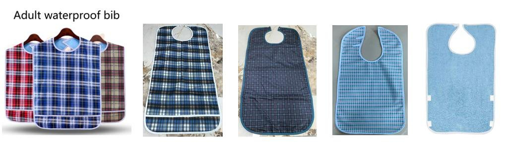
100Fünf Designs, VC-BIB01 bis VC-BIB05
| VC-BIB01 | Karo, drei Farbvarianten |
|---|---|
| VC-BIB02 | Blau-weißes Karo |
| VC-BIB03 | Marine-Karo |
| VC-BIB04 | Hellblaues Karo |
| VC-BIB05 | Blaues Frottee |
Maschinenwaschbar, mit würdevoller, erwachsener Optik. Eigene Stoffe, Drucke und Verschlüsse für Private Label. Wird oft zusammen mit Unterlagen von Pflegeheimen und Händlern für häusliche Pflege bestellt.
Zertifikate und Prüfberichte
Kopien mit Nummer und Geltungsbereich erhalten Sie mit Ihrer Bestellung.
 103
103 104
104Was wir nachweisen können
| Stoffe | Stoffoptionen nach OEKO-TEX® Standard 100 (Produktklasse I für Babys) |
|---|---|
| Management | Qualitätsmanagementsystem ISO 9001; BSCI-Sozialaudit |
| Chemische Prüfungen | REACH-SVHC-Prüfung; CPSIA-Prüfung für Babyprodukte (USA) |
| Leistung | Wasserdichtheitsprüfung (ISO 811) nach 50 / 100 / 300 Wäschen; Waschbeständigkeit (ISO 6330); Saugleistung je Stufe |
| Endkontrolle | AQL-2.5-Bericht pro Auftrag; externe Prüfung willkommen |
Wer unsere Unterlagen kauft
 40
40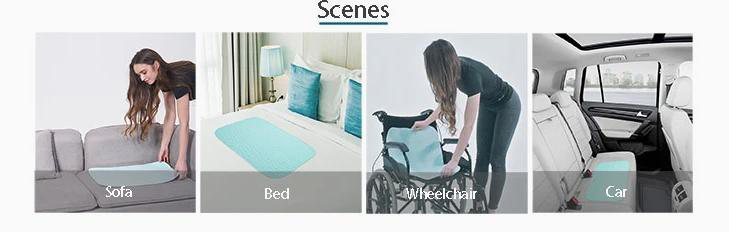
39Kanäle, die wir beliefern
| Krankenhäuser | Allgemeinstationen; Ausführungen mit Griffen und Care-Pro 95 für die 95-°C-Wäsche |
|---|---|
| Pflegeheime | Ausführungen mit Laschen und Griffen, Großpackung, farbcodiert |
| Handel für häusliche Pflege | Apotheken, Sanitätshäuser, Amazon-Verkäufer |
| Baby & Kind | Wickelunterlagen, Kinderbett- und Bettnässer-Unterlagen |
| Haustiere | Box-, Sofa- und Autounterlagen; Paw-Guard-Ausführung |
| Möbel & Reisen | Sofa, Rollstuhl, Autositz und Kofferraum |
Was Sie anpassen können, und die Konditionen
58 98
98 99
99Bereit für Ihre Marke
| Größe | 19 Standardgrößen oder jede Größe |
|---|---|
| Stoff | Gebürstetes Polyester, Baumwolle, Bambus, Frottee, Schlingenware, recyceltes Polyester (GRS) |
| Sperrschicht | TPU oder PVC |
| Farbe & Druck | 8 Standardfarben, Druckdesigns, jede Pantone-Farbe |
| Steppung | 12 Muster oder eine individuelle Logo-Steppung |
| Branding | Webetikett, bedrucktes Pflegeetikett, Anhänger |
| Verpackung | Polybeutel, Kopfkarte, Farbkarton, FBA-Etiketten, Exportkarton |
| MOQ | Standardfarben ab 500 Stück pro Größe; Sonderanfertigung ab 1.000 Stück pro Artikel |
| Lieferzeit | In der Regel 25–35 Tage nach Freigabe |
| Zahlung | 100 % T/T oder 50 % Anzahlung und 50 % vor Versand |
| Versand | FOB / CIF / DDP; FBA-fertige Kartons |
Warum Käufer Unterlagen zurückgeben, und was wir dagegen tun
Öffentliche Bewertungen waschbarer Unterlagen beklagen meist dieselben wenigen Punkte. Jeder davon entspricht einer technischen Entscheidung, die wir in der Hand haben.
| Häufige Beschwerde | Ursache | Lösung von VELCURA |
|---|---|---|
| „Nach ein paar Wäschen undicht“ | Dünne PU-Beschichtung reißt bei Hitze | Kaschierte TPU-Membran, geprüft per Wassersäulentest nach 50 / 100 / 300 Wäschen |
| „Rutscht im Bett herum“ | Glatte Polyester-Rückseite | Silikon-Antirutschnoppen oder Einstecklaschen |
| „Eingelaufen / kleiner als angegeben“ | Nicht stabilisierte Stoffe | Vorgeschrumpfte Stoffe, Zielwert ≤3 % Maßänderung, Toleranz im Datenblatt |
| „Knistert und ist heiß“ | Nicht atmungsaktive Sperrschicht | Atmungsaktive, leise TPU-Sperrschicht |
| „Kanten ausgefranst, Füllung verklumpt“ | Weite Steppung, schwache Einfassung | Dichte Wellensteppung und doppelt genähtes Schrägband |
| „Falsche Stückzahl im Pack“ | Packfehler | Gewichtskontrolle jedes Kartons, Endkontrolle nach AQL 2,5 |
Von der Anfrage bis zur Lieferung
Briefing
Markt, Ausführungen, Größen, Mengen und Zielpreis.
Angebot
Datenblatt und Preisstaffel innerhalb eines Werktags.
Produktion
In der Regel 25–35 Tage, mit Inline-QC und Endkontrolle.
Versand
FOB / CIF / DDP, FBA-fertige Kartons.
 11
11Häufige Fragen von Einkäufern
Was ist der grundlegende Unterschied zu Einwegunterlagen?
Eine waschbare Unterlage lässt sich über 300-mal in der Maschine waschen, daher liegen ihre Gesamtkosten pro Nutzung – inklusive Waschkosten – rund 73 % unter denen einer Einwegunterlage. Der grundlegendere Unterschied ist der Schutz: Sie verrutscht nicht und läuft an den Rändern nicht aus, sodass die Matratze nicht verschmutzt oder gar unbrauchbar wird. Das macht das Preis-Leistungs-Verhältnis noch besser.
Wie viele Wäschen hält eine VELCURA-Unterlage?
Die Standardausführung ist für 300 Haushaltswäschen (Verfahren nach ISO 6330) ausgelegt und geprüft und bleibt dabei wasserdicht. Ausführungen für die Großwäscherei mit 95 °C sind erhältlich.
Wie hoch ist Ihre Mindestbestellmenge für Eigenmarken?
Lagerfarben ab 500 Stück je Größe. Sonderstoffe, -farben oder bedruckte Logos in der Regel ab 1.000 Stück je SKU. Die endgültige MOQ steht in Ihrem Angebot.
Liefern Sie Amazon-FBA-fertige Verpackungen?
Ja. Wir drucken FNSKU-Etiketten, Erstickungswarnhinweise und Kartonetiketten nach Amazon-Vorgaben und liefern über Ihren Spediteur an FBA-Lager in den USA, der EU und Japan.
Bereit für Ihre eigene Linie waschbarer Unterlagen?
Nennen Sie uns Markt, Größen und Mengen. Innerhalb eines Werktags erhalten Sie Datenblatt und Staffelpreise.